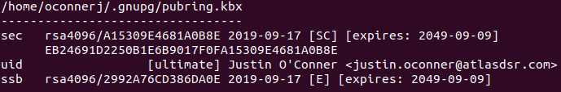
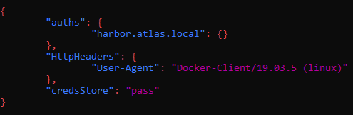

Steps to Configure Workstation for Azure Kubernetes (AKS)
This document will instruct you on how to configure your workstation to access Azure Kubernetes clusters (AKS) and Azure Container Registry.
Table of Contents
- Prerequisites
- Acquiring the Tools
- Configuring
kubectlfor an AKS Cluster - Configuring for Azure Container Registry
- Other Tools
- Troubleshooting
- Useful Resources
Prerequisites
- Any of the three major operating systems (Windows, Mac, Linux) will work great with the Azure CLI and
kubectl, however:- All of the Linux steps in this document were tested on Ubuntu 18.04.
- All of the Windows steps were tested on Windows 10 20H2.
- MacOS has not been tested, so steps are not included for that OS.
- You’ll need some kind of Linux environment for development/testing of containerized code.
- If your primary OS is Windows, here are some options:
- On Windows, the Windows Subsystem for Linux 2 (WSL 2) is recommended.
- A Linux VM is usually a solid option.
- Docker Desktop can work in a pinch.
- If your primary OS is Windows, here are some options:
- Docker (see the next section for instructions on how to install it).
How to Install Docker
- On Ubuntu 18.04+:
- For convenience, installing Docker can be done quickly with a bash script.
- https://bit.ly/35y7b94
- To use
dockercommands withoutsudo, you may need to reissue thesudo usermod -aG docker $USERcommand after the script completes successfully and then fully log out and back in.
- On WSL 2 (running Ubuntu 18.04+):
- These steps assume:
- You’re running Windows 10 20H2 or later.
- You already have WSL installed.
- You’ve already created an Ubuntu 18.04+ distro. Use
wsl -l -vfrom the Windows host to see the WSL version of your distro and make sure it’s2.
- Start with running the convenience script from the Ubuntu section above in the WSL environment, though it won’t work 100%.
- The main issue you’ll run into is that WSL 2 does not run
systemd(or equivalent) by default. Once you hit the steps in the script which attempt to test the Docker installation, they will fail since the service will not start. - So, you’ll need to manually start the Docker daemon (e.g.
sudo service docker start). - Since it would be annoying to have to manually start the Docker daemon every time you open a new WSL session, you can configure it to start automatically:
- From within WSL, create a script somewhere accessible on your home path (e.g.
~/.local/bin/start-docker.sh) that contains aservice docker startcommand. - Make sure it’s executable (
chmod +x <file>). - Now you’ll need to make sure the script can be ran as sudo without a password prompt. Issue this command:
sudo visudo - Add this line to the file:
%sudo ALL=(root) NOPASSWD: <full path to file>- E.g.
%sudo ALL=(root) NOPASSWD: /home/username/.local/bin/start-docker.sh - Note that the
~alias for the user’s home directory cannot be used here.
- Now edit your
.bashrcfile:nano ~/.bashrc - Add this line to it:
sudo <path to file>- E.g.
sudo ~/.local/bin/start-docker.sh
- Now, when you begin a WSL session, Docker will start automatically.
- After setting all this up, you may want to issue a
wsl --shutdownfrom the host and open a new session to “reboot” the underlying VM and make sure it works.- You should see a message like
* Starting Docker: dockeras the session opens if it’s working.
- You should see a message like
- From within WSL, create a script somewhere accessible on your home path (e.g.
- Note that, much like Docker Desktop, using WSL 2 enables Hyper-V, which will disable the use of virtualization tools like VMware Workstation Player.
- Hyper-V can be toggled with this Windows command:
bcdedit /set hypervisorlaunchtype <off/on>. You’ll need to reboot the host for it to take effect.
- Hyper-V can be toggled with this Windows command:
- These steps assume:
- On Docker Desktop (for Windows):
- Go to the Docker Desktop page and download the appropriate version of Docker Desktop for your OS.
- Make sure, after installation, that Docker is running in Linux mode. At least in Docker for Windows, it can optionally run Windows containers, which we do not want.
- Note that installing Docker Desktop on Windows enables Hyper-V, which will disable the use of virtualization tools like VMware Workstation Player.
- Hyper-V can be toggled with this Windows command:
bcdedit /set hypervisorlaunchtype <off/on>. You’ll need to reboot for it to take effect.
- Hyper-V can be toggled with this Windows command:
Acquiring the Tools
First, you’ll need to acquire the Azure CLI if you haven’t already.
- Windows: https://docs.microsoft.com/en-us/cli/azure/install-azure-cli-windows?tabs=azure-cli
- Ubuntu: https://docs.microsoft.com/en-us/cli/azure/install-azure-cli-apt (only the manual install instructions have been tested)
Then, you’ll want to download kubectl, which is made easy by the Azure CLI. Just run this command:
az aks install-cli
Configuring kubectl for an AKS Cluster
In order to tell kubectl which cluster to use and which credentials to use, you’ll need to provide a kubeconfig. This kubeconfig is in a common location, where kubectl checks for it by default. Thankfully, the Azure CLI can be used to acquire one. For example:
az loginto log in to Azure. Make sure to use your Atlas account.az aks get-credentials --resource-group <resource-group-name> --name <clustername><resource-group-name>is the name of the resource group that the cluster lives in.<clustername>is the name of the cluster within that resource group.- You’ll likely be asked to sign in by entering a device code on a page in a browser. Again, make sure to use your Atlas account.
- Now you have a
kubeconfig(~/.kube/configorC:\Users\your.username\.kube\config) for the specified cluster. - These credentials expire on a regular interval, so you’ll need to reauthenticate from time to time.
Once you’ve got your kubeconfig set up correctly, kubectl should now function and allow you to access whatever resources on the cluster you have access to. Test that it works by issuing this command:
kubectl get pod
You’ll either see a list of pods or “No resources found” if no pods are currently running. If you get an error message (especially one about being unauthorized), something went wrong and you’ll need to troubleshoot with DevOps.
Configuring for Azure Container Registry
Getting things set up to communicate with Azure Container Registry (ACR) is both very simple and also somewhat annoying. Authenticating is the easy part—making sure your authentication isn’t saved as plain text on disk is where things get more complicated. Follow these steps, depending on which development path you’ve taken so far. If you’re using WSL 2, use the Linux instructions. Otherwise, this assumes you have the correct version of Docker Desktop for your OS already installed as per the prerequisites.
- On Linux/WSL 2 only:
- Before you can log in to the registry, you’ll need to configure a credentials store or else Docker will just save your token in plaintext on disk, which is not acceptable.
- Some distros come with a credentials store and some don’t. These steps assume you need to install one and configure Docker to use it.
- Commands here will be Ubuntu/Debian-based, but should port easily to any distro.
- Install pass:
sudo apt install pass. - Generate a GPG key for pass:
gpg --full-generate-keywill begin walking you through the generation of a key.- These steps were tested using an “RSA and RSA” type key (option 1) that expires in
30y. - You can enter whatever for your real name and email address, though it helps to identify the key later if you use meaningful values.
- You’ll be asked for a password—make sure to note your user ID, email address, and this password somewhere secure like a password store.
- If the generation process seems to hang after confirming the password, it’s probably trying to generate enough entropy to pull random bytes for the key.
- Spam garbage on the keyboard (though be careful; anything you type will end up in the bash prompt when the process finishes) and, if using a graphical environment, move the mouse around.
- Once the operation has finished, run
gpg --list-secret-keys --keyid-format LONGto see the key you generated. - You should see output that looks something like this:

- You’ll need to copy the key ID from this for later. In the example, the key ID is the
A15309E4681A0B8Epart of thersa4096/A15309E4681A0B8Ephrase.
- Run
pass init <keyid>where<keyid>is that value you copied in the previous step. This initializes the credential store and makes it ready for Docker to use.- Ex:
pass init A15309E4681A0B8E
- Ex:
- Now you’ll need to acquire the Docker credential helper. Start by navigating here: https://github.com/docker/docker-credential-helpers/releases.
- Download the file most similar to
docker-credential-pass-vX.Y.Z-amd64.tar.gz. - Extract the binary within and make it executable (
chmod +x docker-credential-pass). - Put the file wherever you normally put binaries.
- Now, configure Docker to use it:
- Open the file
$HOME/.docker/config.jsonor create it if it doesn’t exist. - Add a new key/value pair:
"credsStore": "pass". It should look something like this after you add it, but it’s OK if thecredsStorefield is the only one on the object:
- Restart Docker (
sudo systemctl restart dockerorsudo service docker restart).
- Open the file
- If you’re using WSL 2 or a terminal-only/headless distro of Linux, you need to make a minor tweak before proceeding any further:
- Open your
.bashrcfile for editing (e.g.nano ~/.bashrc) - Add this to the end of the file:
export GPG_TTY=$(tty) - Run
source ~/.bashrcor open a fresh terminal to ensure theGPG_TTYvariable is set properly.
- Open your
- Open a terminal/PowerShell session.
- Log in to Azure CLI:
az login- Make sure to use your Atlas account.
- Log in to ACR:
az acr login --name <registry name>- Example:
az acr login --name atlasalertingstudio
- Example:
- You should see “Login succeeded” if it worked.
- Test that you can pull an image:
docker pull atlasalertingstudio.azurecr.io/test/busybox:v1- On Linux this should succeed. On Windows and Mac you may see
image operating system "linux" cannot be used on this platform, which is still a success (though it does indicate you need to switch Docker Desktop to Linux mode).
Other Tools
There are a few other tools strongly recommended that will help with managing and using Kubernetes.
- minikube
- A local workstation Kubernetes cluster used for development.
kubectx+kubenskubectxmakes it simpler to switch between multiple Kubernetes clusters (e.g. minikube, a Test cluster, and a Prod cluster).kubensmakes it trivial to switch active Kubernetes namespaces.- These are Bash scripts, so they won’t work on Windows unless you’re using Bash on Windows (e.g. through Git Bash).
kubectlaliases- Several useful aliases for
kubectl(for Bash or zsh shells). - You may need to create a
~/.bashrcfile manually before you can follow the installation steps.
- Several useful aliases for
kubectlaliases for PowerShell- PowerShell fork of the above.
Troubleshooting
Here are solutions for a few common problems folks have run into while working with AKS/Kubernetes/Docker (especially in WSL).
I get a “resource could not be found in subscription” error when trying to log into Azure Container Registry using
az acr login.
There are a few things to try if you get this error, or one like it. Try them in this order:
- Make sure you’re using the correct registry name. The name must be globally unique, and has several restrictions, so it may be unusual. For example, Alerting Studio’s registry name is
atlasalertingstudio. - Ensure that you’re logging into Azure (
az login) using the correct account. Most of the time, the correct account is your Atlas (@atlasdsr.com) account rather than an Advantage account or other type of Microsoft account. - Make sure Ops has added you to any necessary AD groups and/or Azure RBAC roles.
- To be able to log in, you’ll need at minimum the
AcrPullAzure RBAC role (or equivalent privileges). These roles are usually inherited via AD group membership instead of granted directly.
- To be able to log in, you’ll need at minimum the
When using
kubenson Windows with an AKS Cluster, I get an “invalid memory address or nil pointer dereference” error.
This is a known issue with the Windows version of kubens. You can attempt to add the --admin flag to your az aks get-credentials command when you’re acquiring your kubeconfig. This has worked for a couple folks, but this workaround hasn’t been fully vetted.
If the workaround doesn’t help, you can always just run the commands separately.
kubectl config get-contexts $(kubectl config current-context)will show your current k8s context and namespace (blank is default).kubectl get namespaceswill list all namespaces.kubectl config set-context --current --namespace=(whatever-namespace)will change your current context’s namespace.
Aliasing these commands can help cut down on repetitive strain injury.
I used
wsl --importto import a Linux distribution, but now my sessions log in asroot. How fix?
For whatever reason, when you wsl --export a distro, the magic scaffolding that automatically logs you in as your Linux user account doesn’t come along for the ride. Importing it causes new sessions to just fall back to root. This is especially frustrating if you’re remoting your development (e.g. through VS Code into WSL), as terminals opened from the IDE will also log in as root. Thankfully, there is a workaround:
- Within WSL, create (or edit)
/etc/wsl.conf. - Create this section and key:
[user]
default=your-linux-username
- Replace
your-linux-usernamewith–surprise–your Linux username. - Close all WSL sessions.
- From Windows, run
wsl --shutdown. Then open a new WSL session.
The new session should automatically log in as your Linux user account instead of root.
It seems like I have to re-acquire the
kubeconfigfor the Kubernetes cluster every day.
This is intended behavior. Azure acts as an authentication provider for the Kubernetes clusters it provisions. You’ll need to re-login (via az aks get-credentials) occasionally.
I’m getting certificate trust or HTTPS/SSL connection errors in WSL. It works sometimes but then seems to stop working. Y tho?
There’s a bug in WSL that causes it to stop keeping up with the current date/time when the host machine goes to sleep. When the time in WSL gets out-of-sync enough, SSL verifications will fail. You can confirm this is the cause by running date and checking if the time is dramatically off.
The only known workaround at the moment is to restart WSL. Close all sessions, run wsl --shutdown in Windows, and then open a new session.
Useful Resources
Here are some useful resources for learning and managing Kubernetes.
- Kubernetes Academy
- A series of handy Kubernetes courses from VMware.
- Despite being from VMware, most of the courses are generic to all Kubernetes implementations.
- Avoid courses specifically targeting PKS/TKG/TKGI.
- Kubernetes the Hard Way
- A tutorial/lab exercise walking you through the manual configuration of a Kubernetes cluster.
- Helpful to get a better grasp on what’s going on behind the curtain.